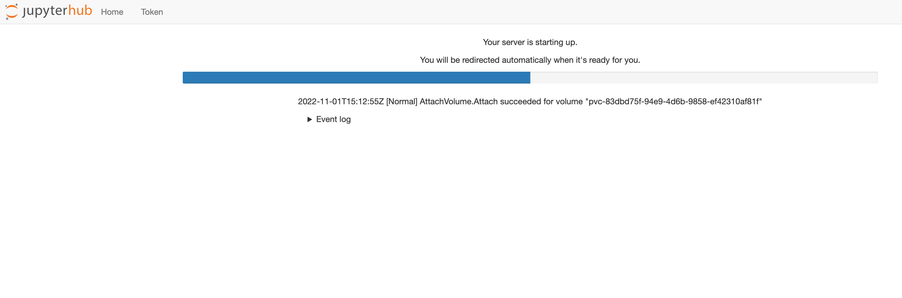

Innlogging
Innlogging på Dapla er veldig enkelt. Dapla er en nettadresse som alle SSB-ere kan gå inn på hvis de er logget på SSB sitt nettverk. Å være logget på SSB sitt nettverk betyr i denne sammenhengen at man er logget på med VPN, enten man er på kontoret eller på hjemmekontor. For å gjøre det enda enklere har vi laget en fast snarvei til denne nettadressen på vårt intranett/Byrånettet(se Figur 1).

Men samtidig som det er lett å logge seg på, så er det noen kompliserende ting som fortjener en forklaring. Noe skyldes at vi mangler et klart språk for å definere bakkemiljøet og skymiljøet slik at alle skjønner hva man snakker om. I denne boken definerer bakkemiljøet som stedet der man har drevet med statistikkproduksjon de siste tiårene. Skymiljøet er den nye dataplattformen Dapla på Google Cloud.
Det som gjør ting litt komplisert er at vi har 2 Jupyter-miljøer på både bakke og sky. Årsaken er at vi har ett test- og ett prod-område for hver, og det blir i alt 4 Jupyter-miljøer. Figur 2 viser dette.
Hver av disse miljøene har sin egen nettadresse og sitt eget bruksområde.
Dapla
I de fleste tilfeller vil en statistikker eller forsker ønske å logge seg inn i prod-miljøet. Det er her man skal kjøre koden sin i et produksjonsløp som skal publiseres eller utvikles. I noen tilfeller hvor man ber om å få tilgjengliggjort en ny tjeneste så vil denne først rulles ut i testområdet som vi kaller staging-området. Årsaken er at vi ønsker å beskytte prod-miljøet fra software som potensielt ødelegger for eksisterende funksjonalitet. Derfor ruller vi ut nye ting i staging først. Av den grunn vil de fleste oppleve å bli bedt om å logge seg inn der for testing en eller annen gang. Under forklarer vi hvordan man går frem for å logge seg på de to ulike miljøene på Dapla.
Prod
For å logge seg inn inn i prod-miljøet på Dapla kan man gjøre følgende:
- Gå inn på lenken https://jupyter.dapla.ssb.no/ i en Chrome-nettleser eller klikk på lenken på Byrånettet som vist i Figur 1.
- Alle i SSB har en Google Cloud-konto som må brukes når man logger seg på Dapla. Brukernavnet i Google er det samme som din korte epost-adresse (f.eks. cth@ssb.no). Hvis du ikke allerede er logget inn i Google vil du få spørsmål om å velge hvilken Google-konto som skal brukes (Figur 3). Logg inn med din Google-konto (ssb.no) og ditt AD-passord.

- Deretter blir man spurt om man godtar at ssb.no (altså Dapla) kan bruke din Google Cloud-konto (Figur 4). Trykk Allow.
- Deretter lander man på en side som lar deg avgjøre hvor mye maskinkraft som skal holdes av til deg (Figur 5). Det øverste alternativet er valgt som standard, og er tilstrekkelig for de fleste.

- Vent til maskinen din starter opp (Figur 6). Oppstartstiden kan variere.

Etter dette er man logget inn i et Jupyter-miljø som kjører på en minimal Ubuntu-maskin. Hvis man er del av et Dapla-team får man også tilgang til alt teamet har tilgang til.
Staging
Innlogging til staging-miljøet er identisk med innloggingen til prod-miljøet, med ett viktig unntak: nettadressen er nå https://jupyter.dapla-staging.ssb.no/.
Litt mer om hva som er tilgjenglig her kommer.
Bakkemiljøet
Jupyter-miljøet på bakken bruker samme base-image1 for å installere Jupyterlab, og er derfor identisk på mange måter. Men innloggingen er ganske forskjellig.
Fom. 5. desember 2022 har vi byttet ut Jupyter-miljøet på bakken. Beskrivelsene under gjelder derfor det nye miljøet. Fram til 15. januar vil du kunne bruke det gamle miljøet ved å gå inn på lenken https://jupyter-prod.ssb.no/ manuelt i Google Chrome. Etter 15. januar blir det gamle Jupyter-miljøet avviklet.
Prod
Du logger deg inn på prod i bakkemiljøet på følgende måte:
- Logg deg inn på Citrix-Windows i bakkemiljøet. Det kan gjøres ved å bruke lenken Citrix på Byrånettet, som også vises i Figur 1.
- Trykk på Jupyterlab-ikonet, som vist på (jupyter-icon?), og logg deg inn med vanlig brukernavn og passord.
Når du trykker på ikonet blir du tatt til nettadressen https://sl-jupyter-p.ssb.no/. Du kunne også åpnet Jupyterlab ved åpne Chrome-nettleseren og skrive inn adressen manuelt.
Staging
Innlogging til staging-miljøet har ingen snarvei på Skrivebordet, og du må gjøre følgende for å åpne miljøet:
- Åpne Chrome-nettleseren i Citrix-Windows.
- Skriv inn url-en https://sl-jupyter-t.ssb.no/
Fotnoter
Hva er base-image?↩︎